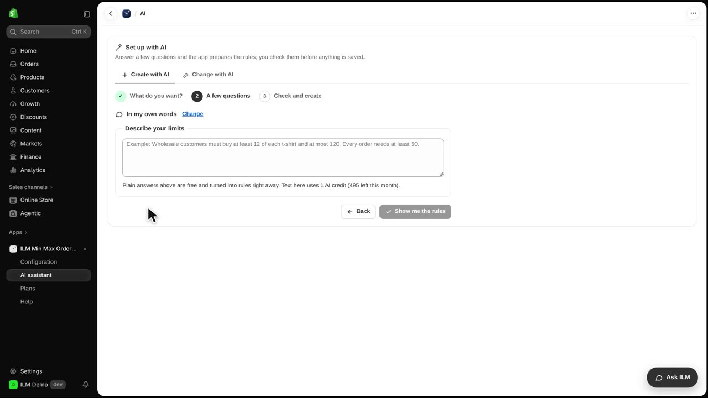
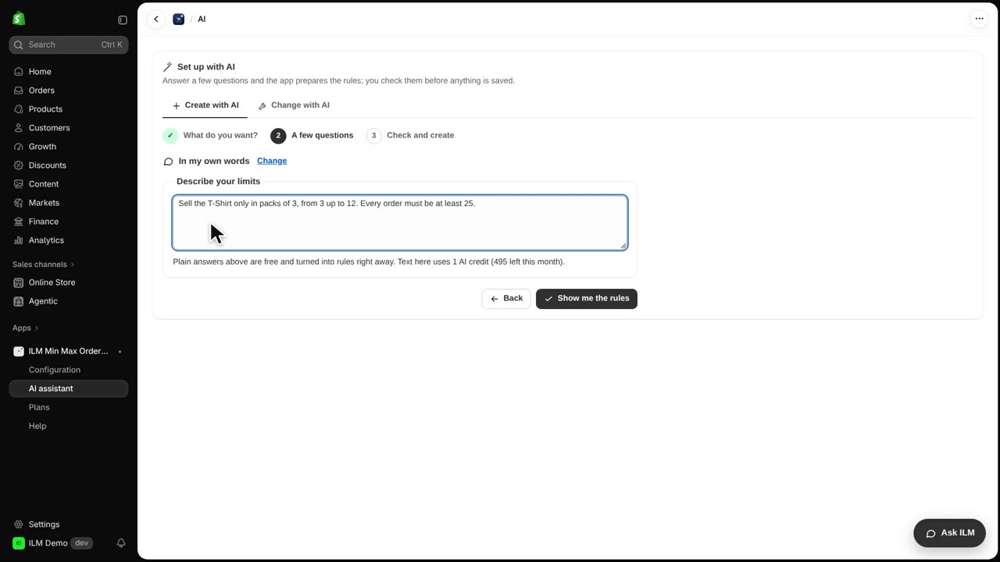
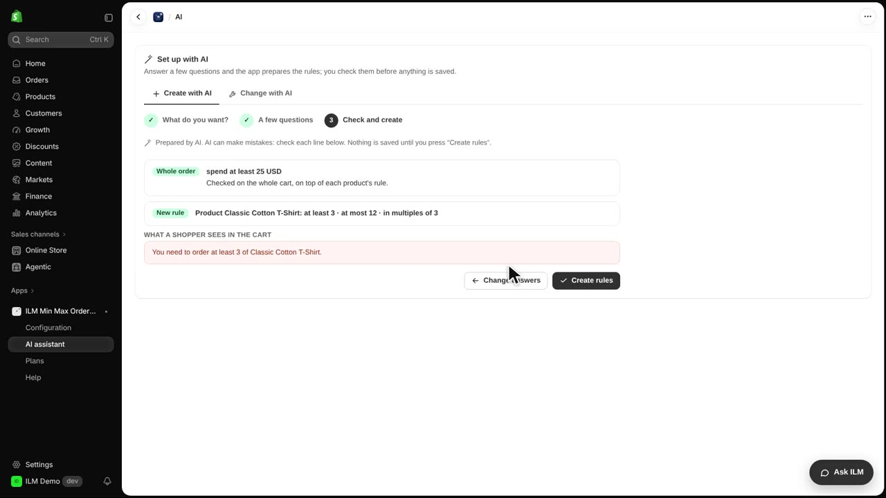
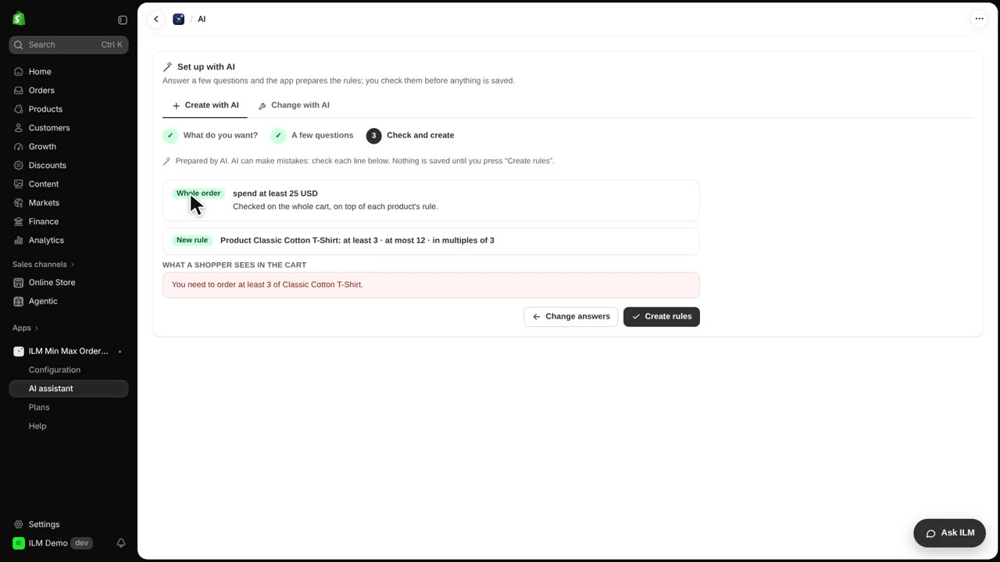
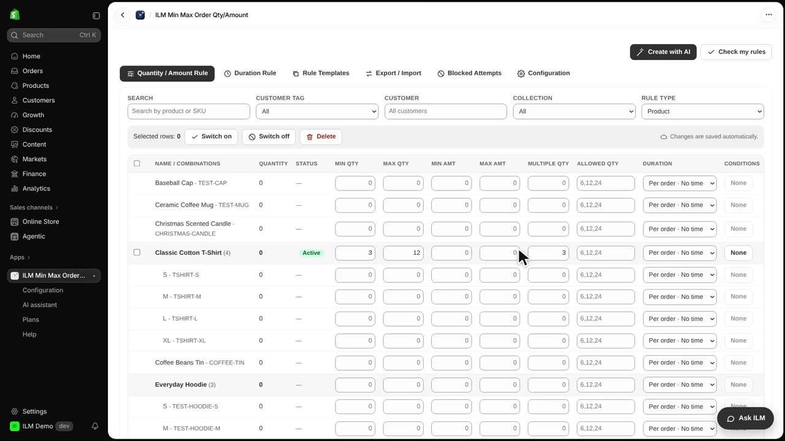
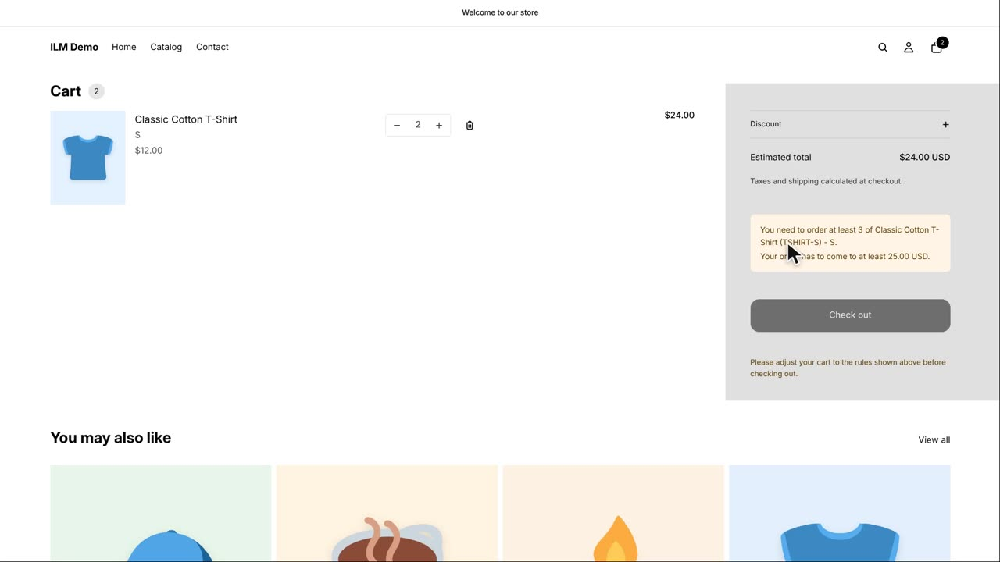

The quickest way to set up the app is to describe your limits in your own words, and AI turns them into rules for you to check. Today we will set limits for the Classic Cotton T-Shirt: sold in packs of three, from three up to twelve, with a minimum order of twenty-five. You will see exactly what AI creates, review it, and then watch the rules work in the shop.
Click Create with AI at the top of the app, and choose In my own words. This opens a simple text box where you can describe your limits the way you would explain them to a colleague. No special formatting is needed.

Type your limits into the text box. For our example we type: sell the T-shirt only in packs of three, from three up to twelve, and every order must be at least twenty-five. This tells AI the multiple, the minimum, and the maximum all at once.

Click Show me the rules. AI prepares the rules and shows them to you first, before anything is saved. This preview step is your chance to check that AI understood you correctly.

Each line says what it will do, so read the list carefully. AI can make mistakes, so check that the quantities and limits match what you intended. Nothing is saved yet at this point.

When the list looks right, click Create rules. The rules are saved and appear in the grid, where you can change any value by hand later.

In the shop, we add two T-shirts to the cart and the store refuses them. The new rules are live, and the shopper sees a notice explaining the minimum and multiple requirements. This confirms that AI created working rules.
